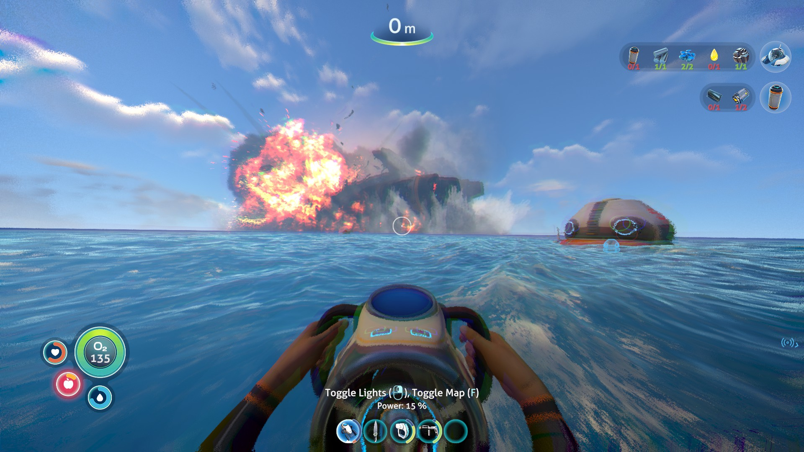
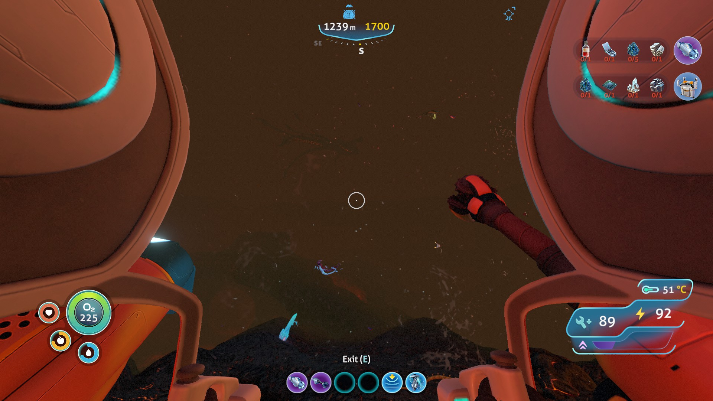

Premise

Subnautica is a game made by Unknown Worlds Entertainment. Subnautica allows the player to explore the uncharted alien planet Planet 4546B by scuba diving and traveling in futuristic aquatic vehicles . The planet is almost all water, meaning the player must scuba dive for almost all resources such as metal and upgrades.
Descend into the depths of an alien underwater world filled with resources, creatures, wonder and threats. Craft equipment and submarines to explore lush coral reefs, volcanoes, cave systems, and more – All while trying to survive.
Subnautica is a first-person video game set in the future on an aquatic uncharted planet created and released by Unknown Worlds Entertainment, that blends the traits of the survival and the exploration genres. Subnautica hit Steam on December 16, 2014 as part of the Early Access program and was fully released on January 23, 2018. The game is available on PC (Steam & Humble Bundle), VR (Steam and Oculus Home) and Xbox One. A version for the PlayStation 4 was looked into for after V1.0 and was released December 6, 2018. Also released on Nintendo Switch along with its sequel Subnautica Below Zero in a double pack. Due to the developer-centric update policies on Steam, that version receives updates the earliest.
Progression
| area: | key resources | dangers | key items |
| Safe Shallows |
Copper Titanium |
none |
Seaglide Seamoth |
| Aurora |
none |
Reaper Leviathans Fires |
Cyclops |
| Lost River |
Rubies Uraninite Crystalline Sulfur |
Ghost Leviathans River Prowlers |
Cyclops mk.1/2 PRAWN Suit |
| Inactive Lava Zone |
Kyanite |
The Sea Dragon |
PRAWN Suit mk.1 |
| Active Lava Zone |
none |
The Sea Dragon |
Cyclops mk.3 PRAWN Suit mk.2 |
The amazing creatures

Fauna in Subnautica can be found all over the planet, from the mysterious depths of the Crystal Caves to the vibrant Safe Shallows, and the fiery pits of the Lava Lakes.
Fauna on Planet 4546B comes in all shapes, sizes, and forms. Ranging from the tiny, cave-dwelling Rockgrub, to the colossal Sea Dragon Leviathan that spews molten minerals from its mouth. Fauna on Planet 4546B is capable of enduring and adapting to various environments
In Subnautica additional scans after unlocking the Data Bank Entry for that particular species of Fauna alert the player as to whether or not the specimen is infected with the Kharaa virus infections.
The world is bursting with species and as such every corner is filled with beautiful and terrifying creatures. The world of Subnautica is designed in a way to reward observant players with unique encounters